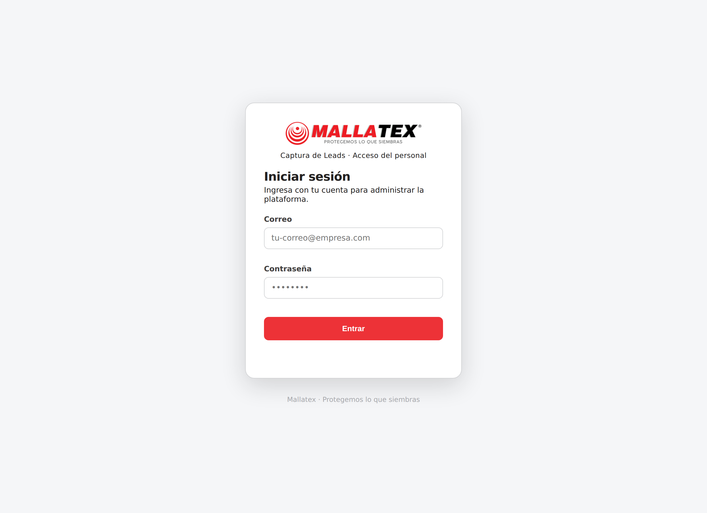
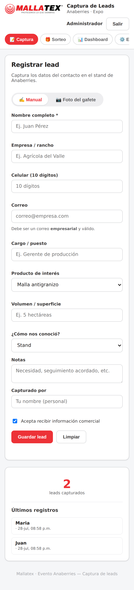
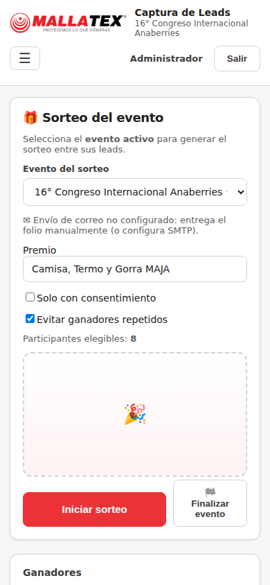
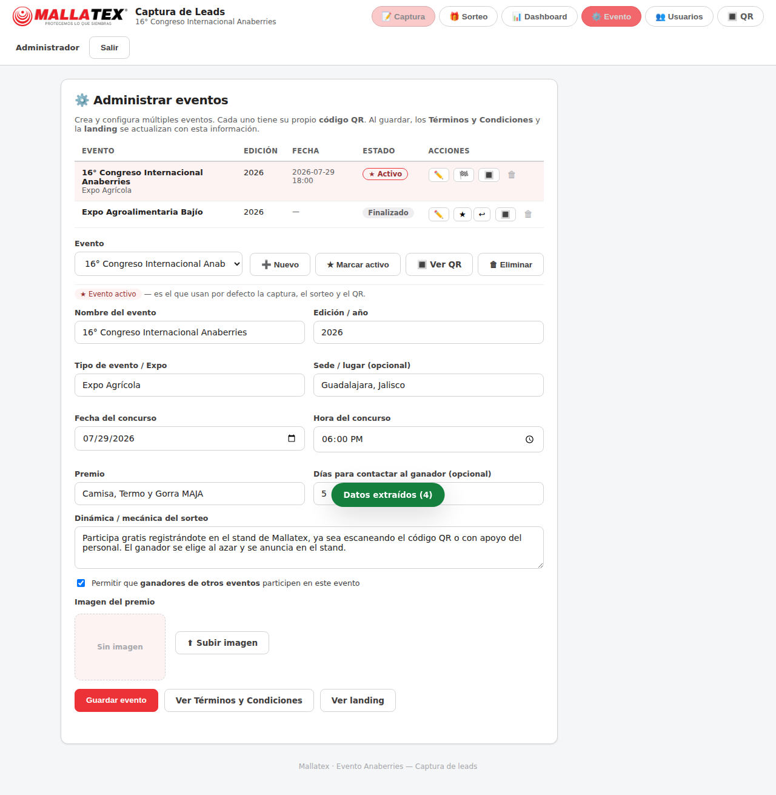
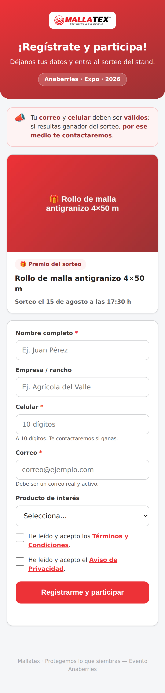
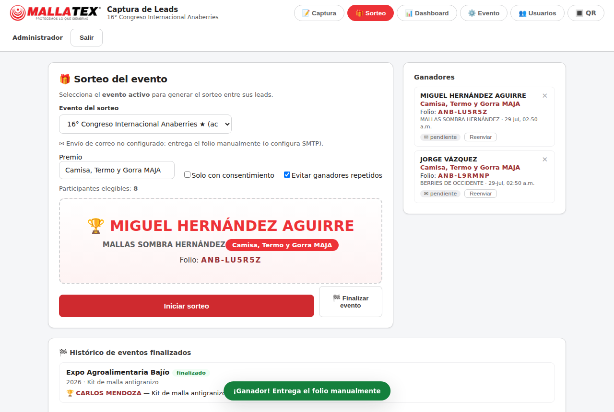
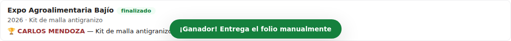
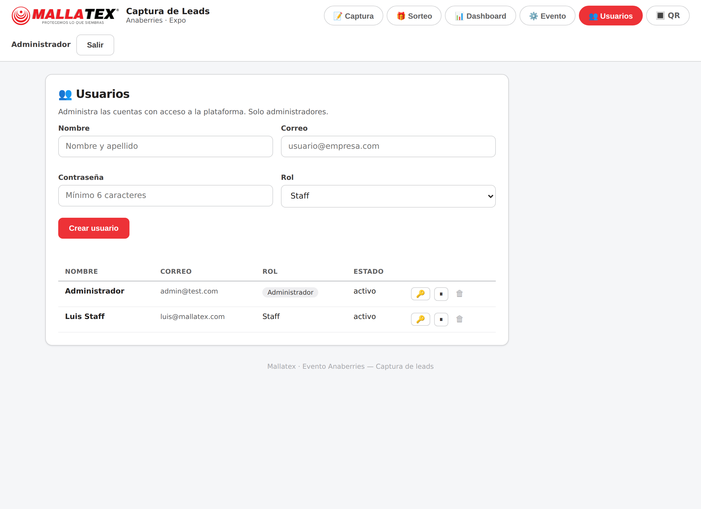

Guía completa de la plataforma «Mallatex · Sorteos»: acceso y sesión, administración de eventos, registro del visitante por QR, captura del staff, sorteo, dashboard y usuarios.
Versión 2.0 · Julio 2026 · Uso interno
Mallatex · Protegemos lo que siembras
Contenido
1 Introducción y visión general
Mallatex · Sorteos es la plataforma para capturar leads en los eventos de Mallatex, realizar sorteos de premios entre ellos y dar seguimiento desde un panel. Está pensada para el personal (staff) del stand y para el visitante, que puede autorregistrarse escaneando un código QR.
Dos entornos
Entorno
Quién lo usa
Acceso
Landing pública (/registro)
El visitante del stand
Abierta (por QR). No requiere sesión.
Panel del personal (inicio)
Staff y administradores
Requiere iniciar sesión.
Qué incluye el panel del personal
📝 Captura — registrar leads a mano o por foto del gafete (OCR).
🎁 Sorteo — elegir un ganador al azar del evento vigente.
📊 Dashboard — indicadores, tabla de leads y exportación a Excel/CSV.
⚙️ Evento — crear y administrar múltiples eventos, cada uno con su QR.
👥 Usuarios — alta y gestión de cuentas (solo administradores).
Idea clave: el premio es el incentivo; el objetivo es un padrón de contactos reales para el seguimiento comercial de Mallatex.
2 Acceso y sesión
2.1 Iniciar sesión
Todo el panel del personal requiere iniciar sesión con correo y contraseña. Solo la captura del visitante (la landing por QR) queda pública.
Abre la dirección de la plataforma en el navegador.
Escribe tu correo y contraseña.
Presiona Entrar.

Pantalla de inicio de sesión con la identidad de Mallatex.
2.2 Primera configuración por NIP (opcional)
Para el primer arranque, o para recuperar el acceso, existe un NIP de configuración: aparece la opción «primera configuración» en el login solo si el administrador la habilitó. Permite entrar sin contraseña para crear los usuarios reales y, al finalizar, se desactiva automáticamente.
El NIP se habilita desde el servidor (variable SETUP_PIN). Una vez creados los usuarios y finalizada la configuración, deja de funcionar.
3 Perfil y cierre por inactividad
3.1 Mi perfil
Cada usuario puede ver y modificar sus datos. Haz clic en tu nombre (arriba a la derecha) para abrir Mi perfil.
Consulta tu nombre, correo y rol.
Edita tu nombre y correo.
Cambia tu contraseña (debes escribir tu contraseña actual para confirmar).
Cierra sesión con Cerrar sesión.
También puedes cerrar sesión con el botón Salir de la barra superior.
3.2 Cierre por inactividad
Por seguridad, si dejas la sesión inactiva un tiempo, aparece un aviso «¿Sigues ahí?» con una cuenta regresiva de 30 segundos:
Si presionas Continuar sesión, la sesión se mantiene.
Si no confirmas, la sesión se cierra automáticamente y regresas al login.
Útil en dispositivos compartidos del stand: evita que una sesión quede abierta sin vigilancia.
4 Navegación del panel
Usa las pestañas superiores para moverte entre Captura, Sorteo, Dashboard, Evento y Usuarios.
El logo de Mallatex siempre te lleva al primer menú (Captura).
En teléfonos, las pestañas se agrupan en un menú ☰ (hamburguesa): tócalo para abrir y elegir la sección. El diseño es responsivo y adaptativo.

Vista en teléfono (captura).

Vista en teléfono (sorteo).
5 Administrar eventos (CRUD)
En la pestaña ⚙️ Evento administras múltiples eventos. Cada uno tiene su propio código QR, premio y padrón de participantes. Al guardar, la landing y los Términos y Condiciones se actualizan con esta información.
5.1 Lista y estado de los eventos
La lista muestra todos los eventos con su estado y acciones por fila:
Estado
Significado
★ Activo
Es el evento predeterminado para captura, sorteo y QR.
Vigente
Disponible para sortear, pero no es el activo.
Finalizado
Cerrado; pasa al histórico y ya no aparece para sortear.
5.2 Acciones
Nuevo — crea un evento (no roba el «activo» al evento en curso).
Editar (✏️) — carga el evento en el formulario para modificarlo.
Marcar activo (★) — lo vuelve el predeterminado.
Finalizar (🏁) / Reabrir (↩︎) — cierra el evento (pasa al histórico) o lo reabre.
Ver QR (🔳) — abre el póster del código de ese evento.
Eliminar (🗑) — borra el evento (no debe tener leads registrados).
5.3 Datos de cada evento
Nombre, edición/año y tipo/Expo.
Sede, fecha y hora del concurso.
Premio e imagen (se muestran en la landing y en los Términos).
Dinámica/mecánica y días para contactar al ganador.
¿Ganadores de otros eventos pueden participar? — política por evento.

Administrar evento: premio, imagen, fecha y mecánica.
Reutilizable: para un próximo evento solo crea/actualiza estos campos; no se necesita cambiar la aplicación.
6 Registro del visitante por QR
El visitante escanea el QR del evento y abre la landing de registro. Es mobile-first y ofrece dos formas de capturar sus datos:
6.1 Foto del gafete (opción principal)
Toca 📷 Tomar foto del gafete (modo por defecto).
Abre la cámara y toma la foto, o usa Subir imagen.
Presiona ✨ Extraer datos: se llenan nombre, empresa, correo y teléfono.
Revisa y completa tu celular y correo (siempre visibles).
6.2 Captura manual (opción secundaria)
Con ✍️ Capturar manual el visitante escribe sus datos. La foto del gafete es opcional: si la cámara falla, siempre puede registrarse a mano.
Landing de registro (celular).

Landing con el premio del evento.
6.3 Datos y confirmación
Correo y celular válidos son obligatorios: por ahí se contacta al ganador (correo empresarial; celular de 10 dígitos).
Se elige el Estado de la República.
Se aceptan Términos y Aviso de Privacidad.
Al enviar, el visitante recibe su folio de registro (ANB-XXXXXX) con la nota de que sus datos deben coincidir con su gafete, y se le redirige al sitio oficial de Mallatex.
Confirmación con el folio de registro.
Si alguien intenta registrarse dos veces con el mismo correo o celular, el sistema lo reconoce y no duplica.
7 Captura por el staff
Cuando un visitante no puede escanear el QR, el staff lo registra desde la pestaña 📝 Captura, en modo Manual o Foto del gafete.
Registra al menos el nombre y un medio de contacto (celular o correo).
Completa empresa, Estado, cargo, producto de interés y notas.
Los campos de texto se capturan en MAYÚSCULAS automáticamente (excepto correo y teléfono).
Al guardar, se muestra el folio del lead para leérselo al visitante y la nota de verificar el gafete.
Pantalla de Captura con Manual / Foto del gafete.
Foto del gafete (OCR)
El sistema puede leer el gafete y llenar los datos. El OCR corre en el dispositivo (sin conexión). Tras extraer, revisa y corrige siempre el correo y el celular.
Foto del gafete lista para extraer.Datos autocompletados por el lector (OCR).
8 El sorteo
En la pestaña 🎁 Sorteo eliges un ganador al azar. Solo se puede sortear si hay un evento vigente (no finalizado); si no lo hay, el botón se deshabilita y se avisa.
Selecciona el evento del sorteo (vigente).
Confirma el premio y las opciones (Solo con consentimiento, Evitar ganadores repetidos).
Verifica el número de participantes elegibles.
Presiona Iniciar sorteo. Tras la animación aparece el ganador con su folio.
Configuración del sorteo por evento.

Ganador con su folio; se envía por correo si hay SMTP.
El ganador reutiliza su folio de registro (un solo folio por persona) y, si el correo está configurado, recibe una notificación con el folio.
Los eventos finalizados muestran un histórico con su detalle y su ganador.
Si el ganador no aparece, puedes anular el sorteo y repetirlo.

Histórico de eventos finalizados con su ganador.
9 Dashboard de seguimiento
La pestaña 📊 Dashboard muestra el avance en tiempo real. Puedes filtrar por evento.
Indicadores: leads totales, del día, con consentimiento, tasa de consentimiento y ganadores.
Gráficas: por producto de interés, por fuente, por hora y por captador.
Tabla de leads: búsqueda por nombre/empresa/correo, filtro por producto y una columna con el Evento donde se capturó cada lead. El ícono 📷 abre la foto del gafete.
Exportar CSV: descarga los leads (incluye folio, estado y evento) para Excel y el seguimiento comercial.
Dashboard: indicadores, gráficas y tabla de leads.
10 Administración de usuarios
Solo los administradores ven la pestaña 👥 Usuarios. Desde ahí se crean y gestionan las cuentas del personal.
Rol
Puede
Administrador
Todo: captura, sorteo, dashboard, eventos y gestión de usuarios.
Staff
Captura, sorteo y dashboard; no administra usuarios.
Crear usuario con nombre, correo, contraseña (mín. 6) y rol.
Cambiar contraseña (🔑), activar/desactivar (⏸/▶) y eliminar (🗑) cuentas.
Cada usuario puede editar sus propios datos en Mi perfil.

Administración de usuarios (solo administradores).
Siempre debe existir al menos un administrador; el sistema evita quedarte sin acceso.
11 Buenas prácticas y solución de problemas
Buenas prácticas
Ten el QR del evento activo impreso y visible en el stand.
Ten un dispositivo del staff listo para registrar a quien no pueda escanear.
Confirma en voz alta el correo y el celular: por ahí se contacta al ganador.
Realiza el sorteo en el horario anunciado, con un evento vigente.
Al cierre, exporta el CSV y finaliza el evento.
Solución de problemas
Situación
Qué hacer
«Correo o contraseña incorrectos»
Verifica el correo del usuario. Un administrador puede restablecer la contraseña desde Usuarios.
No aparece la pestaña Usuarios
Esa pestaña es solo para administradores.
No se puede iniciar sorteo
Debe haber un evento vigente (no finalizado). Activa o crea uno.
La cámara no abre en la landing
Usa «Subir imagen» o cambia a «Capturar manual». La foto es opcional.
El OCR no leyó bien el gafete
Toma la foto con buena luz y gafete plano; corrige los campos antes de guardar.
La sesión se cerró sola
Fue por inactividad. Vuelve a iniciar sesión; la próxima vez pulsa «Continuar».
12 Checklist rápido
Antes del evento
Evento creado y marcado como activo.
Premio, fecha/hora y mecánica configurados.
QR del evento impreso y colocado.
Usuarios del staff creados.
Durante el evento
Invitar a escanear el QR.
Registrar a quien no pueda (manual o gafete).
Verificar correo y celular de cada lead.
Vigilar el Dashboard.
En el sorteo y cierre
Sortear con el evento vigente, en el horario anunciado.
Contactar al ganador con su folio.
Exportar el CSV de leads.
Finalizar el evento (pasa al histórico).
Mallatex · Sorteos — Manual de Uso · Protegemos lo que siembras